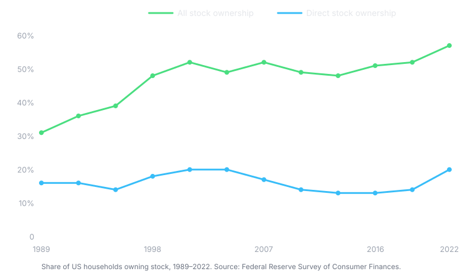

writing
Why is the world betting against Google, Meta, and Nvidia?
More than $1.1 trillion was wiped off the market in a single day. Everyone is running the math. Almost no one is naming the real reason: skepticism and fear.
More than $1.1 trillion was wiped off the market in a single day. While this may not be the only instance in the Nasdaq and S&P 500, it was one of the most alarming ones. This sharp decline meant that retail investors in the US were betting against the success of big tech companies.
But the question is why?
While you will see YouTubers giving all the math and also giving you a dose of complicated economics, no one is pointing to the real reason: skepticism and fear.
Why are investors skeptical?
Let's understand the reason for skepticism first. Imagine you are told to invest in a company that is bound to make profits by 2060, but the success depends on a perception. A perception that enterprises will go mad and buy out AI.
But wait, there is a blocker. You yourself see how costly it is to use AI. Then you scroll down the reels and TikTok videos showing some open-source Chinese model doing the same that these tech giants are offering at 10x the price.
So, why would a sane enterprise exec choose a costly AI setup?
What this means is you get skeptical of the profits being delayed further or never coming through. So your investment is basically a dead fish floating on the water surface.
Now, this is just paranoia or skepticism, but where the fear kicks in.
The fear of investment killing the investor
Now, most of the retail investors in the US may not be from an IT background, but they are also not in minority. Plus, 58% of the US households directly own stock shares in some form. Look at the graph below.

And despite only 1% of the total equity value held by the bottom 50% of the US population, these retail investors matter. Even the top 10% of the equity shareholders in the Nasdaq account for $48 trillion.
And what are top tech companies doing to promote their companies — "AI is coming for your jobs!" One CEO says, "We will not need software engineers by the end of this year." Another says, "No one will need to do a job by 2036 because money has no value by then."
What this does is fuel fear and skepticism in the market.
So, why would an investor who is earning put money in your pocket when you want to hit the source of income?
I may be proved wrong, and we all may be doomed by the end of this decade. But what I feel is that replacing everything with AI is not the answer. Investors are your partners, and instilling fear in everyone that we have something that is coming for you, your jobs, and your business does not make sense.
Building a narrative that investors and buyers actually trust?
Connect with Sachin